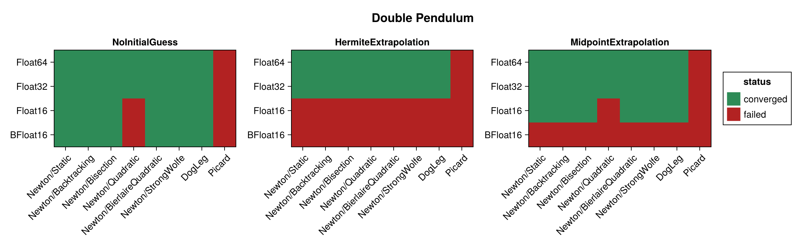
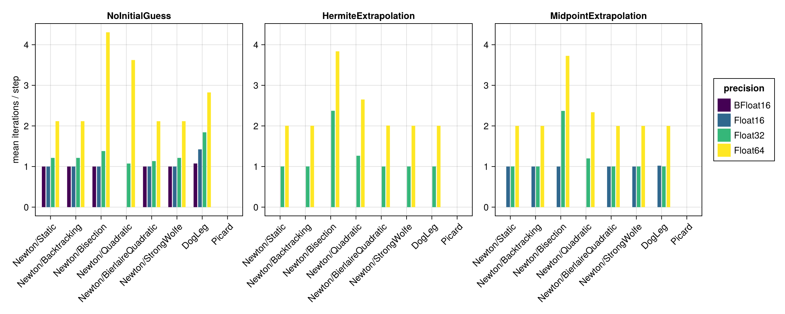
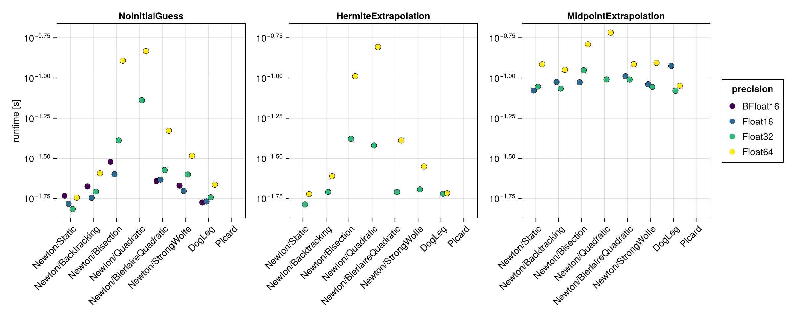
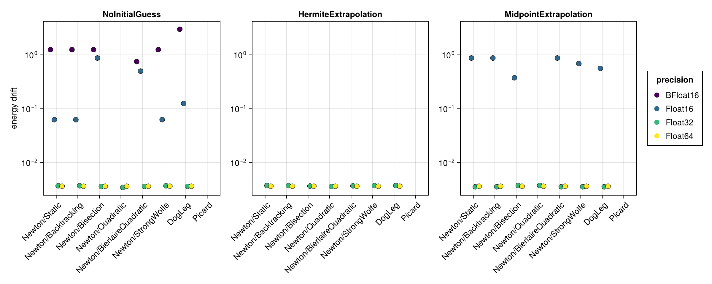
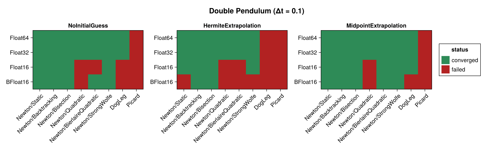
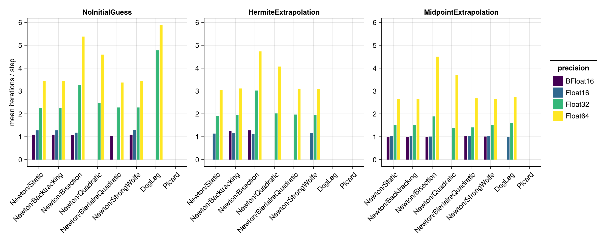
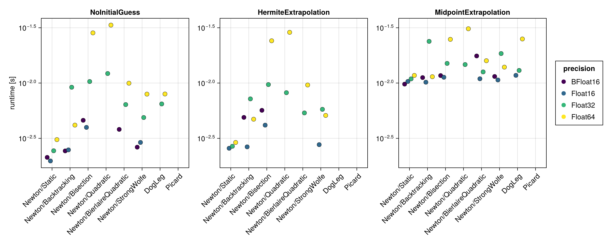
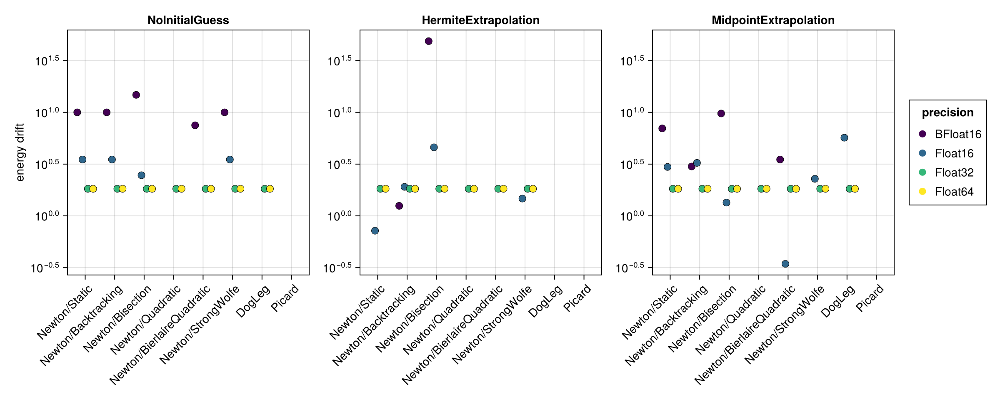

Double Pendulum
The double pendulum is a chaotic, strongly nonlinear Hamiltonian system. It is built here with hodeproblem (the canonical Hamiltonian form), so the implicit midpoint equations require genuine nonlinear iterations at every step. Because the Hamiltonian $H(t, q, p)$ depends on both the coordinates $q$ and the momenta $p$, the energy-drift proxy is evaluated from the full $(q, p)$ state.
Because the forces are $O(g m l)$, this problem's nonlinear residual bottoms out well above $\varepsilon(T)$, so the solver tolerance is relaxed to $256\,\varepsilon(T)$. That floor is a property of the problem's scale, not of the precision: measured, it sits at $\approx 200 \dots 260\,\varepsilon(T)$ at every precision. It is also why the results table below carries an at_tolerance column with every row flagged — on this problem a converged run stops at its target rather than below it. Read the caveat literally at 16-bit: $256\,\varepsilon(\texttt{BFloat16})$ is $2.0$, comparable to the energy itself, so a BFloat16 row here reports having met a target too loose to say much.
The benchmark below is regenerated at documentation build time with a single, fast timing pass. See the driver script scripts/midpoint_double_pendulum.jl for accurate BenchmarkTools measurements. The results are shown first for the standard step $\Delta t = 0.01$ and then repeated for a coarse step $\Delta t = 0.1$ (see Coarse time step (Δt = 0.1)).
using SolverBenchmark
spec = double_pendulum_spec(timespan = (0.0, 10.0), timestep = 0.01)
df = cached_sweep("double_pendulum_dt0.01") do
run_benchmark(spec; timing = :quick, verbose = false, quiet = true)
endConvergence
plot_convergence(df; title = "Double Pendulum")
Nonlinear iterations
Mean number of nonlinear-solver iterations per time step (converged runs only):
plot_iterations(df)
Run time
plot_runtime(df)
Energy drift
Drift of the conserved energy $H(t, q, p)$ of the double pendulum:
plot_energy_drift(df)
Discussion
- The problem is chaotic and nonlinear, so Newton needs genuine iterations at every step. All six line searches behave similarly;
Newton/Quadraticis the weakest of them but still converges for two thirds of the runs.Picardnever converges here, and atΔt = 0.01it is the only failure atFloat32/Float64; at the coarse stepDogLegjoins it. - Precision dominates: 21/24 at both
Float32andFloat64, 11/24 atFloat16and 5/24 atBFloat16(58/96 overall; 64/96 at the coarse step). Every converged row is flagged in theat_tolerancecolumn, because on this problem the residual floor is the tolerance — see the note above. - No closed-form solution is available, so accuracy is judged solely through the energy drift, which scales with the floating point precision.
Results table
markdown_table(summary_table(df))| precision | solver_label | initial_guess | converged | iterations_mean | runtime_s | max_residual | at_tolerance | energy_drift |
|---|---|---|---|---|---|---|---|---|
| BFloat16 | Newton/Static | NoInitialGuess | ✓ | 1 | 0.0185 | 1.28 | ✓ | 1.25 |
| BFloat16 | Newton/Static | HermiteExtrapolation | ✗ | — | — | — | ✗ | — |
| BFloat16 | Newton/Static | MidpointExtrapolation | ✗ | — | — | — | ✗ | — |
| BFloat16 | Newton/Backtracking | NoInitialGuess | ✓ | 1 | 0.0212 | 1.28 | ✓ | 1.25 |
| BFloat16 | Newton/Backtracking | HermiteExtrapolation | ✗ | — | — | — | ✗ | — |
| BFloat16 | Newton/Backtracking | MidpointExtrapolation | ✗ | — | — | — | ✗ | — |
| BFloat16 | Newton/Bisection | NoInitialGuess | ✓ | 1 | 0.0301 | 0.762 | ✓ | 1.25 |
| BFloat16 | Newton/Bisection | HermiteExtrapolation | ✗ | — | — | — | ✗ | — |
| BFloat16 | Newton/Bisection | MidpointExtrapolation | ✗ | — | — | — | ✗ | — |
| BFloat16 | Newton/Quadratic | NoInitialGuess | ✗ | 1.01 | 0.0325 | 2.95 | ✗ | — |
| BFloat16 | Newton/Quadratic | HermiteExtrapolation | ✗ | — | — | — | ✗ | — |
| BFloat16 | Newton/Quadratic | MidpointExtrapolation | ✗ | — | — | — | ✗ | — |
| BFloat16 | Newton/BierlaireQuadratic | NoInitialGuess | ✓ | 1 | 0.0228 | 1.28 | ✓ | 0.75 |
| BFloat16 | Newton/BierlaireQuadratic | HermiteExtrapolation | ✗ | — | — | — | ✗ | — |
| BFloat16 | Newton/BierlaireQuadratic | MidpointExtrapolation | ✗ | — | — | — | ✗ | — |
| BFloat16 | Newton/StrongWolfe | NoInitialGuess | ✓ | 1 | 0.0214 | 1.28 | ✓ | 1.25 |
| BFloat16 | Newton/StrongWolfe | HermiteExtrapolation | ✗ | — | — | — | ✗ | — |
| BFloat16 | Newton/StrongWolfe | MidpointExtrapolation | ✗ | — | — | — | ✗ | — |
| BFloat16 | DogLeg | NoInitialGuess | ✓ | 1.07 | 0.0168 | 2 | ✓ | 3 |
| BFloat16 | DogLeg | HermiteExtrapolation | ✗ | — | — | — | ✗ | — |
| BFloat16 | DogLeg | MidpointExtrapolation | ✗ | — | — | — | ✗ | — |
| BFloat16 | Picard | NoInitialGuess | ✗ | 1.14 | 0.0199 | 65.5 | ✗ | — |
| BFloat16 | Picard | HermiteExtrapolation | ✗ | — | — | — | ✗ | — |
| BFloat16 | Picard | MidpointExtrapolation | ✗ | — | — | — | ✗ | — |
| Float16 | Newton/Static | NoInitialGuess | ✓ | 1 | 0.0165 | 0.226 | ✓ | 0.0625 |
| Float16 | Newton/Static | HermiteExtrapolation | ✗ | — | — | — | ✗ | — |
| Float16 | Newton/Static | MidpointExtrapolation | ✓ | 1 | 0.0834 | 0.22 | ✓ | 0.875 |
| Float16 | Newton/Backtracking | NoInitialGuess | ✓ | 1 | 0.0179 | 0.226 | ✓ | 0.0625 |
| Float16 | Newton/Backtracking | HermiteExtrapolation | ✗ | — | — | — | ✗ | — |
| Float16 | Newton/Backtracking | MidpointExtrapolation | ✓ | 1 | 0.0944 | 0.22 | ✓ | 0.875 |
| Float16 | Newton/Bisection | NoInitialGuess | ✓ | 1 | 0.0252 | 0.249 | ✓ | 0.875 |
| Float16 | Newton/Bisection | HermiteExtrapolation | ✗ | — | — | — | ✗ | — |
| Float16 | Newton/Bisection | MidpointExtrapolation | ✓ | 1 | 0.094 | 0.247 | ✓ | 0.375 |
| Float16 | Newton/Quadratic | NoInitialGuess | ✗ | 1.06 | 0.0294 | 1.56 | ✗ | — |
| Float16 | Newton/Quadratic | HermiteExtrapolation | ✗ | — | — | — | ✗ | — |
| Float16 | Newton/Quadratic | MidpointExtrapolation | ✗ | 1.05 | 0.108 | 1.08 | ✗ | — |
| Float16 | Newton/BierlaireQuadratic | NoInitialGuess | ✓ | 1 | 0.0233 | 0.157 | ✓ | 0.5 |
| Float16 | Newton/BierlaireQuadratic | HermiteExtrapolation | ✗ | — | — | — | ✗ | — |
| Float16 | Newton/BierlaireQuadratic | MidpointExtrapolation | ✓ | 1 | 0.102 | 0.216 | ✓ | 0.875 |
| Float16 | Newton/StrongWolfe | NoInitialGuess | ✓ | 1 | 0.0198 | 0.226 | ✓ | 0.0625 |
| Float16 | Newton/StrongWolfe | HermiteExtrapolation | ✗ | — | — | — | ✗ | — |
| Float16 | Newton/StrongWolfe | MidpointExtrapolation | ✓ | 1 | 0.0914 | 0.171 | ✓ | 0.688 |
| Float16 | DogLeg | NoInitialGuess | ✓ | 1.42 | 0.017 | 0.241 | ✓ | 0.125 |
| Float16 | DogLeg | HermiteExtrapolation | ✗ | — | — | — | ✗ | — |
| Float16 | DogLeg | MidpointExtrapolation | ✓ | 1.02 | 0.119 | 0.24 | ✓ | 0.562 |
| Float16 | Picard | NoInitialGuess | ✗ | 1.86 | 0.0314 | 39.7 | ✗ | — |
| Float16 | Picard | HermiteExtrapolation | ✗ | — | — | — | ✗ | — |
| Float16 | Picard | MidpointExtrapolation | ✗ | 1.24 | 0.108 | 4.1 | ✗ | — |
| Float32 | Newton/Static | NoInitialGuess | ✓ | 1.21 | 0.0153 | 3.04e-05 | ✓ | 0.0037 |
| Float32 | Newton/Static | HermiteExtrapolation | ✓ | 1 | 0.0163 | 2.9e-05 | ✓ | 0.00373 |
| Float32 | Newton/Static | MidpointExtrapolation | ✓ | 1 | 0.0882 | 2.98e-05 | ✓ | 0.00354 |
| Float32 | Newton/Backtracking | NoInitialGuess | ✓ | 1.21 | 0.0196 | 3.04e-05 | ✓ | 0.0037 |
| Float32 | Newton/Backtracking | HermiteExtrapolation | ✓ | 1 | 0.0195 | 2.9e-05 | ✓ | 0.00373 |
| Float32 | Newton/Backtracking | MidpointExtrapolation | ✓ | 1 | 0.0857 | 2.98e-05 | ✓ | 0.00354 |
| Float32 | Newton/Bisection | NoInitialGuess | ✓ | 1.38 | 0.0408 | 3.05e-05 | ✓ | 0.00359 |
| Float32 | Newton/Bisection | HermiteExtrapolation | ✓ | 2.37 | 0.0418 | 3.04e-05 | ✓ | 0.00365 |
| Float32 | Newton/Bisection | MidpointExtrapolation | ✓ | 2.37 | 0.112 | 3.03e-05 | ✓ | 0.00375 |
| Float32 | Newton/Quadratic | NoInitialGuess | ✓ | 1.07 | 0.0726 | 3.02e-05 | ✓ | 0.00346 |
| Float32 | Newton/Quadratic | HermiteExtrapolation | ✓ | 1.27 | 0.038 | 3.03e-05 | ✓ | 0.00358 |
| Float32 | Newton/Quadratic | MidpointExtrapolation | ✓ | 1.2 | 0.0979 | 3.05e-05 | ✓ | 0.00375 |
| Float32 | Newton/BierlaireQuadratic | NoInitialGuess | ✓ | 1.13 | 0.0267 | 3.04e-05 | ✓ | 0.0036 |
| Float32 | Newton/BierlaireQuadratic | HermiteExtrapolation | ✓ | 1 | 0.0195 | 2.6e-05 | ✓ | 0.00368 |
| Float32 | Newton/BierlaireQuadratic | MidpointExtrapolation | ✓ | 1 | 0.0978 | 2.98e-05 | ✓ | 0.00354 |
| Float32 | Newton/StrongWolfe | NoInitialGuess | ✓ | 1.21 | 0.0251 | 3.04e-05 | ✓ | 0.0037 |
| Float32 | Newton/StrongWolfe | HermiteExtrapolation | ✓ | 1 | 0.0203 | 2.9e-05 | ✓ | 0.00373 |
| Float32 | Newton/StrongWolfe | MidpointExtrapolation | ✓ | 1 | 0.0879 | 2.98e-05 | ✓ | 0.00354 |
| Float32 | DogLeg | NoInitialGuess | ✓ | 1.84 | 0.018 | 2.98e-05 | ✓ | 0.0036 |
| Float32 | DogLeg | HermiteExtrapolation | ✓ | 1 | 0.019 | 2.9e-05 | ✓ | 0.00373 |
| Float32 | DogLeg | MidpointExtrapolation | ✓ | 1 | 0.083 | 2.98e-05 | ✓ | 0.00354 |
| Float32 | Picard | NoInitialGuess | ✗ | 2.1 | 0.038 | 36 | ✗ | — |
| Float32 | Picard | HermiteExtrapolation | ✗ | 2 | 0.0341 | 0.621 | ✗ | — |
| Float32 | Picard | MidpointExtrapolation | ✗ | 2.01 | 0.113 | 0.0216 | ✗ | — |
| Float64 | Newton/Static | NoInitialGuess | ✓ | 2.12 | 0.018 | 5.67e-14 | ✓ | 0.00363 |
| Float64 | Newton/Static | HermiteExtrapolation | ✓ | 2 | 0.0189 | 5.02e-14 | ✓ | 0.00363 |
| Float64 | Newton/Static | MidpointExtrapolation | ✓ | 2 | 0.121 | 5.26e-14 | ✓ | 0.00363 |
| Float64 | Newton/Backtracking | NoInitialGuess | ✓ | 2.12 | 0.0255 | 5.67e-14 | ✓ | 0.00363 |
| Float64 | Newton/Backtracking | HermiteExtrapolation | ✓ | 2 | 0.0245 | 5.02e-14 | ✓ | 0.00363 |
| Float64 | Newton/Backtracking | MidpointExtrapolation | ✓ | 2 | 0.112 | 5.26e-14 | ✓ | 0.00363 |
| Float64 | Newton/Bisection | NoInitialGuess | ✓ | 4.31 | 0.128 | 5.66e-14 | ✓ | 0.00363 |
| Float64 | Newton/Bisection | HermiteExtrapolation | ✓ | 3.84 | 0.102 | 5.65e-14 | ✓ | 0.00363 |
| Float64 | Newton/Bisection | MidpointExtrapolation | ✓ | 3.73 | 0.162 | 5.66e-14 | ✓ | 0.00363 |
| Float64 | Newton/Quadratic | NoInitialGuess | ✓ | 3.62 | 0.147 | 5.68e-14 | ✓ | 0.00363 |
| Float64 | Newton/Quadratic | HermiteExtrapolation | ✓ | 2.65 | 0.156 | 5.62e-14 | ✓ | 0.00363 |
| Float64 | Newton/Quadratic | MidpointExtrapolation | ✓ | 2.34 | 0.191 | 5.59e-14 | ✓ | 0.00363 |
| Float64 | Newton/BierlaireQuadratic | NoInitialGuess | ✓ | 2.12 | 0.0469 | 5.61e-14 | ✓ | 0.00363 |
| Float64 | Newton/BierlaireQuadratic | HermiteExtrapolation | ✓ | 2.01 | 0.0408 | 5.53e-14 | ✓ | 0.00363 |
| Float64 | Newton/BierlaireQuadratic | MidpointExtrapolation | ✓ | 2 | 0.122 | 5.67e-14 | ✓ | 0.00363 |
| Float64 | Newton/StrongWolfe | NoInitialGuess | ✓ | 2.12 | 0.0329 | 5.67e-14 | ✓ | 0.00363 |
| Float64 | Newton/StrongWolfe | HermiteExtrapolation | ✓ | 2 | 0.0281 | 5.02e-14 | ✓ | 0.00363 |
| Float64 | Newton/StrongWolfe | MidpointExtrapolation | ✓ | 2 | 0.124 | 5.26e-14 | ✓ | 0.00363 |
| Float64 | DogLeg | NoInitialGuess | ✓ | 2.83 | 0.0217 | 5.59e-14 | ✓ | 0.00363 |
| Float64 | DogLeg | HermiteExtrapolation | ✓ | 2 | 0.0192 | 5.02e-14 | ✓ | 0.00363 |
| Float64 | DogLeg | MidpointExtrapolation | ✓ | 2 | 0.0894 | 5.26e-14 | ✓ | 0.00363 |
| Float64 | Picard | NoInitialGuess | ✗ | 2.1 | 0.0691 | 36 | ✗ | — |
| Float64 | Picard | HermiteExtrapolation | ✗ | 2 | 0.0671 | 0.62 | ✗ | — |
| Float64 | Picard | MidpointExtrapolation | ✗ | 2.01 | 0.137 | 0.0215 | ✗ | — |
Coarse time step (Δt = 0.1)
With a ten times larger step the equations become more strongly nonlinear, which stresses the solvers noticeably more than the $\Delta t = 0.01$ results above.
spec1 = double_pendulum_spec(timespan = (0.0, 10.0), timestep = 0.1)
df1 = cached_sweep("double_pendulum_dt0.1") do
run_benchmark(spec1; timing = :quick, verbose = false, quiet = true)
endConvergence
plot_convergence(df1; title = "Double Pendulum (Δt = 0.1)")
Nonlinear iterations
plot_iterations(df1)
Run time
plot_runtime(df1)
Energy drift
plot_energy_drift(df1)
Results table
markdown_table(summary_table(df1))| precision | solver_label | initial_guess | converged | iterations_mean | runtime_s | max_residual | at_tolerance | energy_drift |
|---|---|---|---|---|---|---|---|---|
| BFloat16 | Newton/Static | NoInitialGuess | ✓ | 1.09 | 0.00213 | 1.77 | ✓ | 10 |
| BFloat16 | Newton/Static | HermiteExtrapolation | ✗ | — | — | — | ✗ | — |
| BFloat16 | Newton/Static | MidpointExtrapolation | ✓ | 1 | 0.00978 | 1.3 | ✓ | 7 |
| BFloat16 | Newton/Backtracking | NoInitialGuess | ✓ | 1.09 | 0.00243 | 1.77 | ✓ | 10 |
| BFloat16 | Newton/Backtracking | HermiteExtrapolation | ✓ | 1.25 | 0.00489 | 1.99 | ✓ | 1.25 |
| BFloat16 | Newton/Backtracking | MidpointExtrapolation | ✓ | 1 | 0.0112 | 1.41 | ✓ | 3 |
| BFloat16 | Newton/Bisection | NoInitialGuess | ✓ | 1.08 | 0.0046 | 1.58 | ✓ | 14.8 |
| BFloat16 | Newton/Bisection | HermiteExtrapolation | ✓ | 1.28 | 0.00567 | 60.2 | ✓ | 48.8 |
| BFloat16 | Newton/Bisection | MidpointExtrapolation | ✓ | 1 | 0.0117 | 1.95 | ✓ | 9.75 |
| BFloat16 | Newton/Quadratic | NoInitialGuess | ✗ | 1.14 | 0.0038 | 24.1 | ✗ | — |
| BFloat16 | Newton/Quadratic | HermiteExtrapolation | ✗ | — | — | — | ✗ | — |
| BFloat16 | Newton/Quadratic | MidpointExtrapolation | ✗ | 1.15 | 0.0148 | 9.25 | ✗ | — |
| BFloat16 | Newton/BierlaireQuadratic | NoInitialGuess | ✓ | 1.03 | 0.00381 | 1.1 | ✓ | 7.5 |
| BFloat16 | Newton/BierlaireQuadratic | HermiteExtrapolation | ✗ | — | — | — | ✗ | — |
| BFloat16 | Newton/BierlaireQuadratic | MidpointExtrapolation | ✓ | 1.02 | 0.0176 | 1.57 | ✓ | 3.5 |
| BFloat16 | Newton/StrongWolfe | NoInitialGuess | ✓ | 1.09 | 0.00263 | 1.77 | ✓ | 10 |
| BFloat16 | Newton/StrongWolfe | HermiteExtrapolation | ✗ | 1.51 | 0.0043 | 34.5 | ✗ | — |
| BFloat16 | Newton/StrongWolfe | MidpointExtrapolation | ✓ | 1.01 | 0.0115 | 1.34 | ✓ | 0 |
| BFloat16 | DogLeg | NoInitialGuess | ✗ | 3.21 | 0.00379 | 17.8 | ✗ | — |
| BFloat16 | DogLeg | HermiteExtrapolation | ✗ | — | — | — | ✗ | — |
| BFloat16 | DogLeg | MidpointExtrapolation | ✗ | 1.2 | 0.0103 | 7.47 | ✗ | — |
| BFloat16 | Picard | NoInitialGuess | ✗ | 3.6 | 0.00567 | 65.5 | ✗ | — |
| BFloat16 | Picard | HermiteExtrapolation | ✗ | 2.8 | 0.00278 | Inf | ✗ | — |
| BFloat16 | Picard | MidpointExtrapolation | ✗ | 1.47 | 0.0104 | 18.1 | ✗ | — |
| Float16 | Newton/Static | NoInitialGuess | ✓ | 1.28 | 0.00198 | 0.243 | ✓ | 3.5 |
| Float16 | Newton/Static | HermiteExtrapolation | ✓ | 1.14 | 0.00257 | 0.21 | ✓ | 0.719 |
| Float16 | Newton/Static | MidpointExtrapolation | ✓ | 1.02 | 0.0103 | 0.177 | ✓ | 2.97 |
| Float16 | Newton/Backtracking | NoInitialGuess | ✓ | 1.28 | 0.00249 | 0.243 | ✓ | 3.5 |
| Float16 | Newton/Backtracking | HermiteExtrapolation | ✓ | 1.17 | 0.00265 | 0.177 | ✓ | 1.91 |
| Float16 | Newton/Backtracking | MidpointExtrapolation | ✓ | 1.02 | 0.0102 | 0.243 | ✓ | 3.25 |
| Float16 | Newton/Bisection | NoInitialGuess | ✓ | 1.18 | 0.00397 | 0.237 | ✓ | 2.47 |
| Float16 | Newton/Bisection | HermiteExtrapolation | ✓ | 1.12 | 0.00416 | 0.213 | ✓ | 4.59 |
| Float16 | Newton/Bisection | MidpointExtrapolation | ✓ | 1.01 | 0.0113 | 0.221 | ✓ | 1.34 |
| Float16 | Newton/Quadratic | NoInitialGuess | ✗ | 1.18 | 0.00383 | 0.733 | ✗ | — |
| Float16 | Newton/Quadratic | HermiteExtrapolation | ✗ | 1.2 | 0.00406 | 2.29 | ✗ | — |
| Float16 | Newton/Quadratic | MidpointExtrapolation | ✗ | 1.14 | 0.0114 | 1.66 | ✗ | — |
| Float16 | Newton/BierlaireQuadratic | NoInitialGuess | ✗ | 1.12 | 0.00394 | 0.707 | ✗ | — |
| Float16 | Newton/BierlaireQuadratic | HermiteExtrapolation | ✗ | 1.12 | 0.00357 | 2.82 | ✗ | — |
| Float16 | Newton/BierlaireQuadratic | MidpointExtrapolation | ✓ | 1.02 | 0.0109 | 0.243 | ✓ | 0.344 |
| Float16 | Newton/StrongWolfe | NoInitialGuess | ✓ | 1.3 | 0.0029 | 0.243 | ✓ | 3.5 |
| Float16 | Newton/StrongWolfe | HermiteExtrapolation | ✓ | 1.17 | 0.00277 | 0.227 | ✓ | 1.47 |
| Float16 | Newton/StrongWolfe | MidpointExtrapolation | ✓ | 1.02 | 0.0107 | 0.16 | ✓ | 2.28 |
| Float16 | DogLeg | NoInitialGuess | ✗ | — | — | — | ✗ | — |
| Float16 | DogLeg | HermiteExtrapolation | ✗ | — | — | — | ✗ | — |
| Float16 | DogLeg | MidpointExtrapolation | ✓ | 1 | 0.0117 | 0.222 | ✓ | 5.69 |
| Float16 | Picard | NoInitialGuess | ✗ | 5.01 | 0.00528 | 39.7 | ✗ | — |
| Float16 | Picard | HermiteExtrapolation | ✗ | — | — | — | ✗ | — |
| Float16 | Picard | MidpointExtrapolation | ✗ | 1.38 | 0.0104 | 1.23 | ✗ | — |
| Float32 | Newton/Static | NoInitialGuess | ✓ | 2.26 | 0.00244 | 2.63e-05 | ✓ | 1.83 |
| Float32 | Newton/Static | HermiteExtrapolation | ✓ | 1.91 | 0.00268 | 2.97e-05 | ✓ | 1.83 |
| Float32 | Newton/Static | MidpointExtrapolation | ✓ | 1.52 | 0.0109 | 3.04e-05 | ✓ | 1.83 |
| Float32 | Newton/Backtracking | NoInitialGuess | ✓ | 2.27 | 0.00916 | 2.63e-05 | ✓ | 1.83 |
| Float32 | Newton/Backtracking | HermiteExtrapolation | ✓ | 1.95 | 0.00719 | 2.86e-05 | ✓ | 1.83 |
| Float32 | Newton/Backtracking | MidpointExtrapolation | ✓ | 1.52 | 0.0238 | 3.04e-05 | ✓ | 1.83 |
| Float32 | Newton/Bisection | NoInitialGuess | ✓ | 3.27 | 0.0103 | 3.02e-05 | ✓ | 1.83 |
| Float32 | Newton/Bisection | HermiteExtrapolation | ✓ | 3.02 | 0.00969 | 3.03e-05 | ✓ | 1.83 |
| Float32 | Newton/Bisection | MidpointExtrapolation | ✓ | 1.89 | 0.0151 | 2.95e-05 | ✓ | 1.83 |
| Float32 | Newton/Quadratic | NoInitialGuess | ✓ | 2.47 | 0.0122 | 2.98e-05 | ✓ | 1.83 |
| Float32 | Newton/Quadratic | HermiteExtrapolation | ✓ | 2.02 | 0.00818 | 2.7e-05 | ✓ | 1.83 |
| Float32 | Newton/Quadratic | MidpointExtrapolation | ✓ | 1.38 | 0.0147 | 3.02e-05 | ✓ | 1.83 |
| Float32 | Newton/BierlaireQuadratic | NoInitialGuess | ✓ | 2.28 | 0.00639 | 2.84e-05 | ✓ | 1.83 |
| Float32 | Newton/BierlaireQuadratic | HermiteExtrapolation | ✓ | 1.97 | 0.00537 | 3e-05 | ✓ | 1.83 |
| Float32 | Newton/BierlaireQuadratic | MidpointExtrapolation | ✓ | 1.41 | 0.0126 | 3.02e-05 | ✓ | 1.83 |
| Float32 | Newton/StrongWolfe | NoInitialGuess | ✓ | 2.28 | 0.00488 | 2.75e-05 | ✓ | 1.83 |
| Float32 | Newton/StrongWolfe | HermiteExtrapolation | ✓ | 1.95 | 0.00579 | 2.93e-05 | ✓ | 1.83 |
| Float32 | Newton/StrongWolfe | MidpointExtrapolation | ✓ | 1.52 | 0.0185 | 3.04e-05 | ✓ | 1.83 |
| Float32 | DogLeg | NoInitialGuess | ✓ | 4.78 | 0.00647 | 2.7e-05 | ✓ | 1.83 |
| Float32 | DogLeg | HermiteExtrapolation | ✗ | — | — | — | ✗ | — |
| Float32 | DogLeg | MidpointExtrapolation | ✓ | 1.6 | 0.013 | 2.7e-05 | ✓ | 1.83 |
| Float32 | Picard | NoInitialGuess | ✗ | 4.01 | 0.00959 | 36.9 | ✗ | — |
| Float32 | Picard | HermiteExtrapolation | ✗ | 3.13 | 0.00628 | 195 | ✗ | — |
| Float32 | Picard | MidpointExtrapolation | ✗ | 2.1 | 0.0198 | 0.947 | ✗ | — |
| Float64 | Newton/Static | NoInitialGuess | ✓ | 3.44 | 0.00308 | 4.63e-14 | ✓ | 1.83 |
| Float64 | Newton/Static | HermiteExtrapolation | ✓ | 3.05 | 0.0029 | 4.67e-14 | ✓ | 1.83 |
| Float64 | Newton/Static | MidpointExtrapolation | ✓ | 2.64 | 0.0117 | 5.15e-14 | ✓ | 1.83 |
| Float64 | Newton/Backtracking | NoInitialGuess | ✓ | 3.45 | 0.00417 | 4.63e-14 | ✓ | 1.83 |
| Float64 | Newton/Backtracking | HermiteExtrapolation | ✓ | 3.11 | 0.00471 | 4.67e-14 | ✓ | 1.83 |
| Float64 | Newton/Backtracking | MidpointExtrapolation | ✓ | 2.64 | 0.0114 | 5.15e-14 | ✓ | 1.83 |
| Float64 | Newton/Bisection | NoInitialGuess | ✓ | 5.38 | 0.0284 | 5.15e-14 | ✓ | 1.83 |
| Float64 | Newton/Bisection | HermiteExtrapolation | ✓ | 4.73 | 0.0241 | 5e-14 | ✓ | 1.83 |
| Float64 | Newton/Bisection | MidpointExtrapolation | ✓ | 4.5 | 0.0248 | 5.52e-14 | ✓ | 1.83 |
| Float64 | Newton/Quadratic | NoInitialGuess | ✓ | 4.59 | 0.0334 | 5.19e-14 | ✓ | 1.83 |
| Float64 | Newton/Quadratic | HermiteExtrapolation | ✓ | 4.07 | 0.0287 | 4.9e-14 | ✓ | 1.83 |
| Float64 | Newton/Quadratic | MidpointExtrapolation | ✓ | 3.7 | 0.031 | 5.38e-14 | ✓ | 1.83 |
| Float64 | Newton/BierlaireQuadratic | NoInitialGuess | ✓ | 3.37 | 0.00996 | 4.97e-14 | ✓ | 1.83 |
| Float64 | Newton/BierlaireQuadratic | HermiteExtrapolation | ✓ | 3.1 | 0.0096 | 5.39e-14 | ✓ | 1.83 |
| Float64 | Newton/BierlaireQuadratic | MidpointExtrapolation | ✓ | 2.68 | 0.0159 | 5.61e-14 | ✓ | 1.83 |
| Float64 | Newton/StrongWolfe | NoInitialGuess | ✓ | 3.44 | 0.00794 | 5.22e-14 | ✓ | 1.83 |
| Float64 | Newton/StrongWolfe | HermiteExtrapolation | ✓ | 3.09 | 0.00509 | 5.04e-14 | ✓ | 1.83 |
| Float64 | Newton/StrongWolfe | MidpointExtrapolation | ✓ | 2.64 | 0.0139 | 5.15e-14 | ✓ | 1.83 |
| Float64 | DogLeg | NoInitialGuess | ✓ | 5.89 | 0.00796 | 5.39e-14 | ✓ | 1.83 |
| Float64 | DogLeg | HermiteExtrapolation | ✗ | — | — | — | ✗ | — |
| Float64 | DogLeg | MidpointExtrapolation | ✓ | 2.73 | 0.025 | 5.3e-14 | ✓ | 1.83 |
| Float64 | Picard | NoInitialGuess | ✗ | 3.98 | 0.0166 | 36.9 | ✗ | — |
| Float64 | Picard | HermiteExtrapolation | ✗ | 3.01 | 0.0234 | 195 | ✗ | — |
| Float64 | Picard | MidpointExtrapolation | ✗ | 2.16 | 0.029 | 0.947 | ✗ | — |